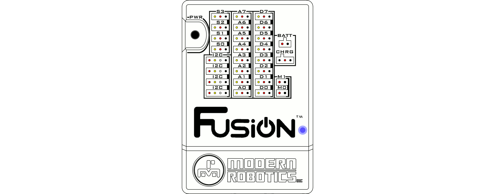

Editor Guide
Refer to the Editor Library Informtation for available Fusion specific functions.
Create a new program
To create a new program from the Home screen, click the LAUNCH button in the Editor box.
A program will open that is listed at UntitledX.py where X is an incrementing number. Click the save button to save the file with a new name. For our example we will name out file myprog which will result in a file being created call myprog.py.
Every new program has an import and class constructor at the beginning of every code. This is needed to operate any Modern Robotics sensor or Fusion functions.
Open an existing program
To open an existing program, click the open file button and select the program you want to open. The program will open in the programming environment as it was the last time it was saved and the file will be listed in the working files directory.
Writing a LED flashing program
This example will show how to create an Editor program to continuously toggle the on-board yellow and blue LEDs. After opening a new program, the program environment contains only the import and class constructor.
import Fusion f = Fusion.driver()1) Turn on the yellow LED and turn off the blue LED using the
setLED(led, value)function from the Fusion Driver class.import Fusion f = Fusion.driver() setLED(f.YELLOW, 1) setLED(f.BLUE, 0)2) The next step is to add a time delay after turning the yellow LED on. This delay determines the length of time that the yellow LED stay on. In order to use the built-in
sleep(seconds)function, the time module must be imported.import Fusion import time f = Fusion.driver() f.setLED(f.YELLOW, 1) f.setLED(f.BLUE, 0) time.sleep(1)3) Now, turn off the yellow LED and turn on the blue LED using the
setLED(led, value)function.import Fusion import time f = Fusion.driver() f.setLED(f.YELLOW, 1) f.setLED(f.BLUE, 0) time.sleep(1) f.setLED(f.YELLOW, 0) f.setLED(f.BLUE, 1)4) The final step before running the program is to add another time delay for the length of time the blue LED stays on.
import Fusion import time f = Fusion.driver() f.setLED(f.YELLOW, 1) f.setLED(f.BLUE, 0) time.sleep(1) f.setLED(f.YELLOW, 0) f.setLED(f.BLUE, 1) time.sleep(1)5) In the toolbar at the top of the page, click "Run" to start running (also saves) the current program. You should observe the following:
1. Only the Yellow LED turns on for 1 second.
2. Only the Blue LED turns on for 1 second.
3. The program will end and both LEDs will be off.To continuously toggle the LEDs on and off, the
setLED()andsleep()functions must be placed inside a loop. For our purpose we will use awhileloop with its condition beingTrue. It is important that any code within thewhile True:loop must be indented with a Tab.import Fusion import time f = Fusion.driver() while True: f.setLED(f.YELLOW, 1) f.setLED(f.BLUE, 0) time.sleep(1) f.setLED(f.YELLOW, 0) f.setLED(f.BLUE, 1) time.sleep(1)You should observe the following:
1. Only the Yellow LED turns on for 1 second.
2. Only the Blue LED turns on for 1 second.
3. The program will continually loop and flash the LEDs until "Stop" is selected in the toolbar.
If any problems arise
Contact Modern Robotics, Inc. at support@modernroboticsinc.com with a detailed description of the steps you have taken and observations you have made.
Email Subject: Fusion Editor Programming